How to estimate the DPM effort and full-time people a WAN or LAN rollout needs — step by step, with every screen explained. Written for Delivery Project Managers; no spreadsheet or training required.
Version 2.3.0 Network Estimator · Orange
What’s inside
Welcome & the key ideasWhat the tool does, and the five words you need: MD, FTE, headcount, utilisation, scenario.
Your first WAN estimateDescribe the project, allocate the sites, read the result.
A LAN estimateDevice tiers, the three calculation modes, and delivery stages.
Comparing scenariosWeigh the same project under different conditions, side by side.
Records & projectsEverything you calculate is saved; reopen, review and reload it.
Team capacityAll active estimates on one calendar, against the size of the team.
The DPM directoryThe people you can assign to an estimate.
Rates & methodWhere the numbers come from, and a glossary.
Saving to the SharePoint team folderHow the team shares one set of estimates automatically.
Keeping the app up to dateThe “what’s new” panel and one-click updates.
The five words
MD — man-day
One person working one full day. Every effort in the tool is in man-days.
FTE
Full-time equivalent: man-days per month ÷ one DPM’s monthly capacity (18 MD by default).
Headcount
FTE rounded up to whole people. 0.86 FTE still needs 1 person.
Utilisation
FTE ÷ headcount — how fully the rounded-up team is loaded.
WAN vs LAN
Two estimators. WAN is priced per product & connectivity mode; LAN per device-count tier.
Record vs project
A record is a saved result. A project is saved inputs you can reload.
1
Welcome & the key ideas
The DPM FTE Calculator turns a project’s size into the effort and the number of full-time people it needs — consistently, and with the arithmetic shown so anyone can follow it.
You describe a rollout (how long it runs, how many sites, what products or device tiers), and the tool returns the total man-days, the FTE, the headcount and the utilisation, along with how the effort spreads across the months. Every calculation is saved automatically, and — when the team folder is linked — shared with your colleagues.
The home screen
The sidebar on the left is how you move around: the two estimators (WAN, LAN), the Team capacity plan, your saved FTE Records and Projects, the DPM Directory, and Rates & Method. The Dashboard opens with what the latest version added and a summary of your most recent estimate.
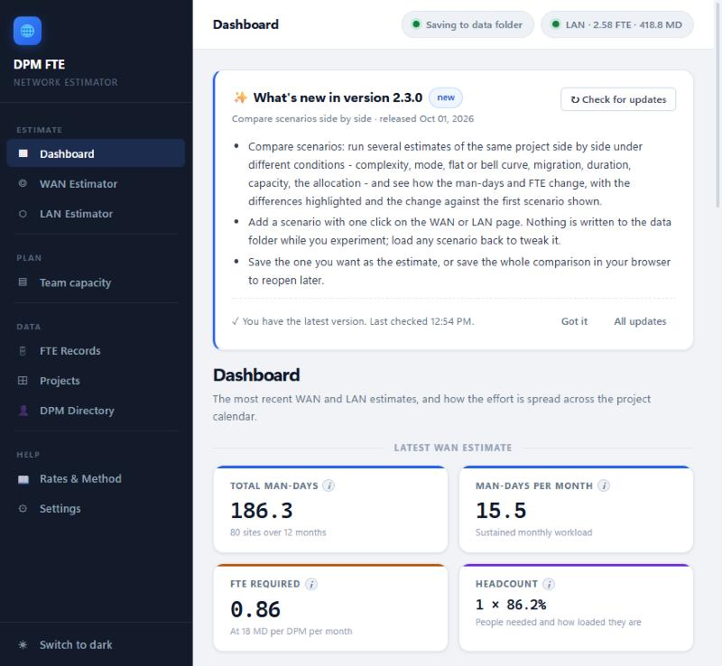
The Dashboard. A “what’s new” panel at the top, then the headline figures from your latest WAN and LAN estimates.
Where do I start?
Pick WAN Estimator or LAN Estimator from the sidebar depending on the rollout. The next two chapters walk through each.
2
Your first WAN estimate
A WAN estimate prices wide-area rollouts per site, from the product and the connectivity mode.
Step 1 — Describe the project
Give the project a name. A stable project code (e.g. DPM-ALS-U4R6) appears top-right and stays with it.
Set the duration — type a number of months, or switch to Start / end date and let the tool work it out.
Optionally set a planned start month (this places the project on the Team-capacity calendar; it does not change the FTE).
Choose the effort distribution: Flat spreads the work evenly; Bell curve ramps up to a mid-project peak and reports the extra Peak FTE that peak needs.
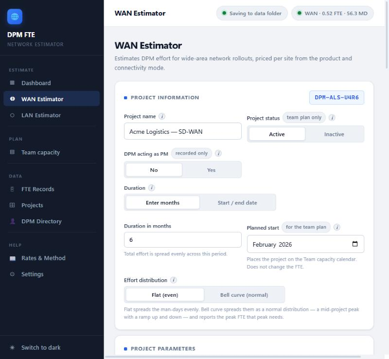
Project information. Name, status, duration, planned start and the flat / bell-curve choice.
Step 2 — Allocate the sites
Set the total sites, then add one allocation row per group of sites that share a product, connectivity mode and complexity. The badge turns green when the rows add up to the total — that’s when you can calculate. (A whole site list can be brought in with Import from Excel.)
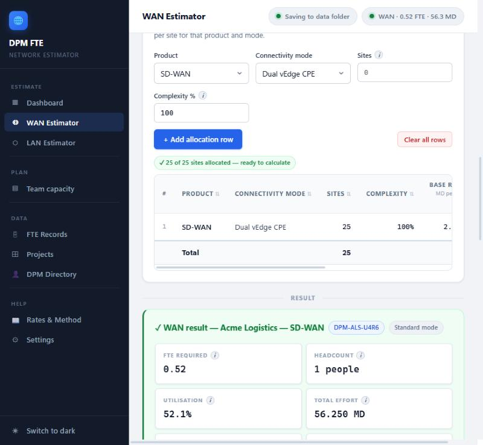
Site allocation by product. Each row is base rate × complexity × sites. The green badge means the allocation balances.
Step 3 — Read the result
Press Calculate WAN FTE. The result shows the headline figures and then exactly how the number was reached, step by step — so you can explain or defend any estimate.
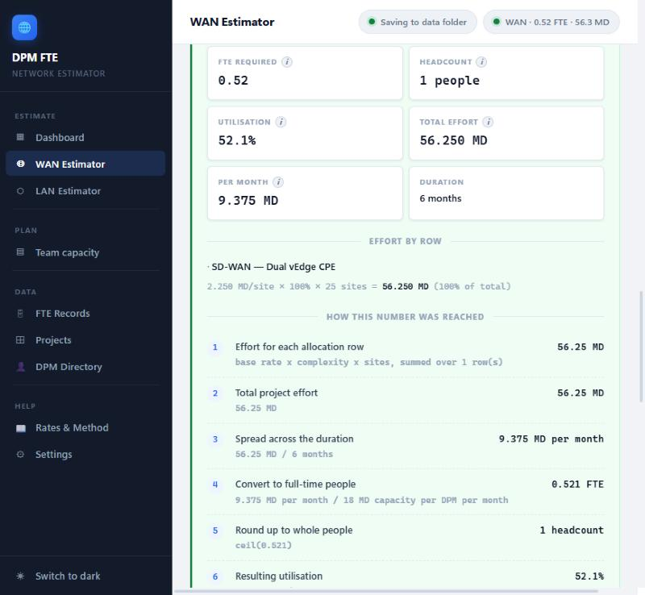
The result. FTE, headcount, utilisation and total effort up top; the per-row maths and the full working below.
It’s already saved
Every calculation is written to your records (and the data folder) automatically. You don’t need a “save” button — though you can Export to Excel or Email result at the bottom.
3
A LAN estimate
A LAN estimate prices local-network rollouts per site from a device-count tier (how many devices a site has).
It works like the WAN estimator — name, duration, total sites, then allocation rows — with three differences:
Tiers, not products. Each allocation row picks a size tier (OD/XS, S, M, Large, XL, Campus). If you add no rows, a device count prices the whole project at one tier.
Three calculation modes.Standard uses the published tier rate card; Non-standard lets you type your own man-days per site; By Stage builds the rate from the delivery stages you select (Design, Planning, Implement, Closing, Controls).
A fallback override field appears in Non-standard mode for the no-tier-rows case.
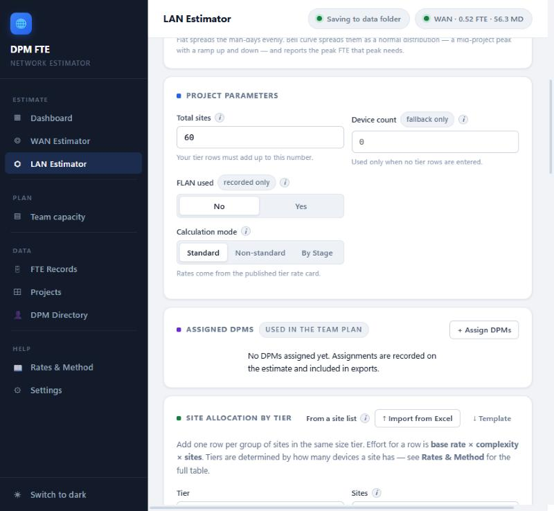
LAN parameters. Total sites, the device-count fallback, and the Standard / Non-standard / By Stage mode selector.
Which mode?
Use Standard for normal work. Use By Stage when only some delivery stages apply. Use Non-standard when you have a negotiated rate the card doesn’t cover.
4
Comparing scenarios
Weigh the same project under different conditions — complexity, mode, flat vs bell curve, migration, duration, capacity, the allocation — side by side.
Set up the project as usual, then press ➕ Add to comparison (next to Calculate). That snapshots the current form as a scenario.
Change one condition and press it again to add another. Repeat for as many as you want to weigh.
Read the Compare scenarios panel: the conditions that differ from the first (baseline) are highlighted, and each result shows its change against the baseline (e.g. +50%).
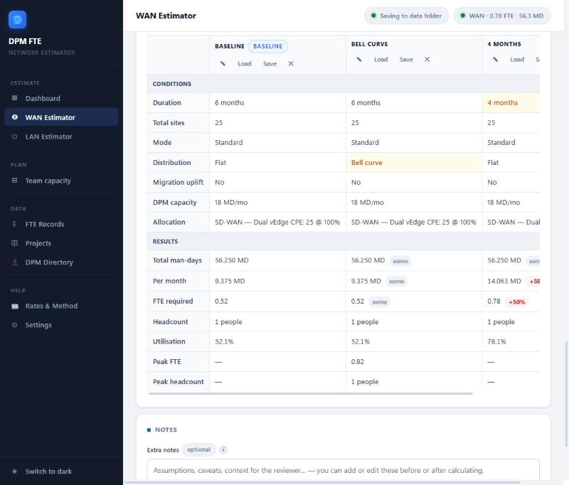
Three scenarios side by side. “Bell curve” and “4 months” differ from the baseline (highlighted); the 4-month option needs +50% FTE.
Nothing is saved while you experiment — a scenario is only a what-if.
Load puts a scenario back on the form to tweak; ✎ renames it; ✕ removes it.
When one is right, its Save button files it as the real estimate. Save comparison keeps the whole set to reopen later with Open saved.
5
Records & projects
Two different things are saved for you — and it’s worth knowing which is which.
An FTE record
A calculated result, frozen with the inputs that produced it. One per calculation; never overwritten.
A project
A set of inputs you typed, saved under a name so you can reload and re-estimate later.
FTE Records
Every calculation lands here automatically. Filter by name, creator, type or status; sort; open any record to see its full breakdown; or Export all to Excel. The portfolio charts at the bottom total everything saved.
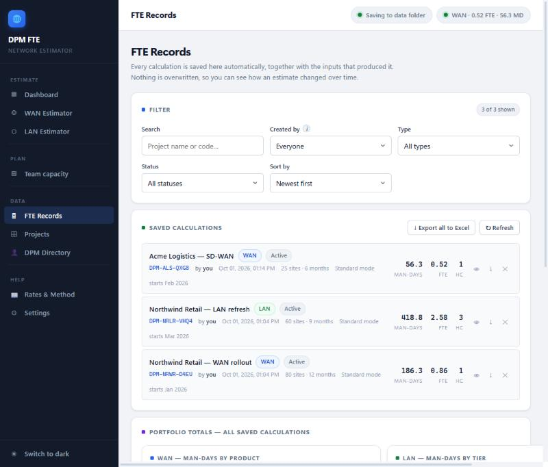
FTE Records. The filter bar, the saved calculations, and each estimate’s man-days / FTE / headcount.
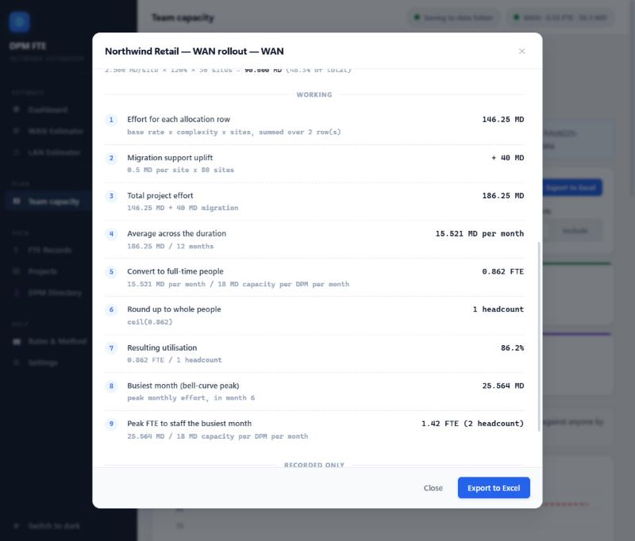
A record’s detail. The same step-by-step working, here showing a migration uplift and the bell-curve Peak FTE. Export to Excel is one click.
Projects
Use Save as project on an estimator to store the settings you’ve entered. Reload them any time with Load into estimator.
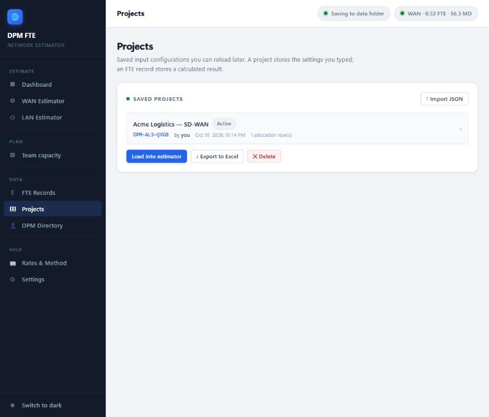
Projects. Saved input configurations you can reload, export or delete.
6
Team capacity
Every active estimate, placed on the calendar from its planned start and added up month by month, compared with the size of the team — so overbooked months show up before they happen.
Set the window (when it starts and how many months to show) and the team capacity. The cards summarise the team capacity, the peak demand and any overbooked months; the chart plots monthly demand against the capacity line.
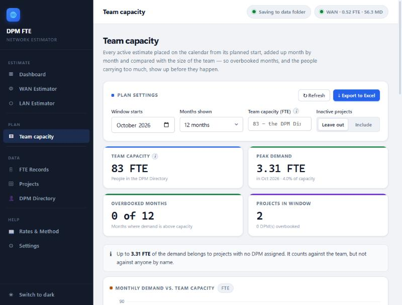
Team capacity. Demand built from every active estimate vs. the team’s capacity, with the busiest month called out.
Only estimates with a planned start and Active status appear on the plan.
Assign DPMs to an estimate (on the estimator) to see each person’s load by name; unassigned demand still counts against the team.
7
The DPM directory
The people you can assign to an estimate.
The directory ships with the team pre-loaded. You can add, edit or remove people, import a list (JSON or a two-column CSV), or export the current one. Your changes live in your browser and never change anyone else’s copy; Restore published list puts it back to what the app shipped with.
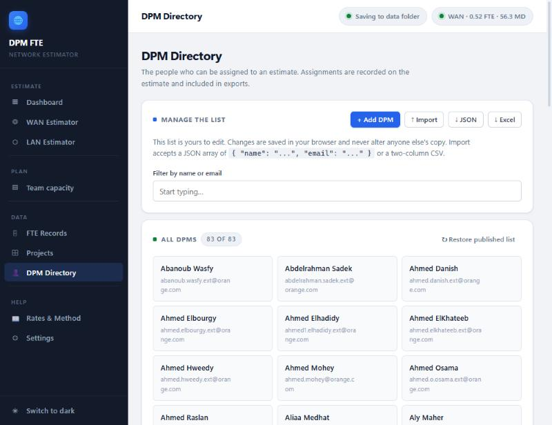
DPM Directory. Search, add or import people; each is available to assign on an estimate.
8
Rates & method
Where every number comes from — no hidden maths.
The Rates & Method page lists the published rate cards (WAN per product and connectivity mode; LAN per tier), the By-Stage activity hours, a worked example, and a glossary of every term. Every result in the app also shows its own arithmetic step by step, so the method is never a black box.
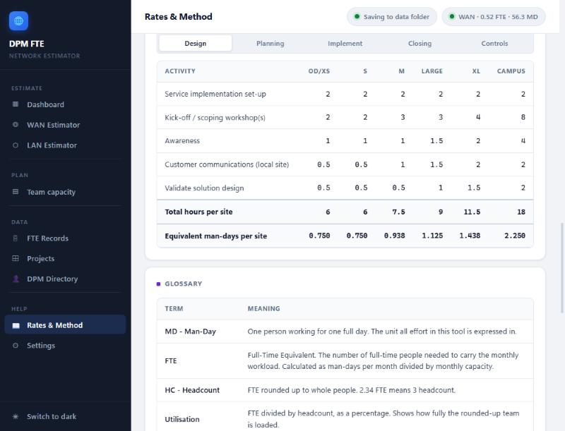
Rates & Method. The LAN delivery-stage hours per tier, and the glossary.
The core formula
row effort = base rate (MD/site) × complexity % × sites
total = sum of rows (+ migration uplift on WAN)
per month = total ÷ duration in months
FTE = per month ÷ DPM monthly capacity (18 MD)
headcount = FTE rounded up to whole people
You can change the capacity, the migration uplift and the default complexity under Settings → Calculation assumptions. Changes apply to new calculations only — saved records keep the values that were in force when they ran, so old results stay reproducible.
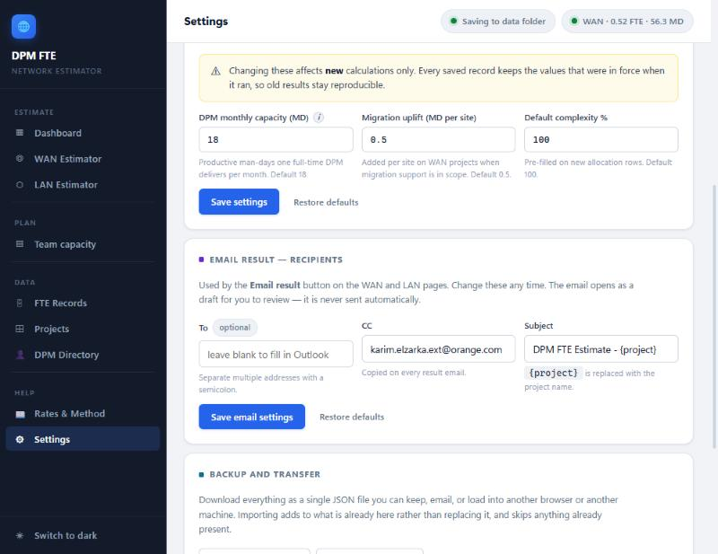
Settings. The calculation assumptions, the result-email recipients, and backup / transfer.
9
Saving to the SharePoint team folder
So the whole team works from one shared set of estimates, without anyone typing a path.
When you run the app with its launcher, it looks for the shared SharePoint folder “FTE - Website” once OneDrive has synced it to your PC, and links it automatically. The chip at the top-right then reads Saving to SharePoint. Every estimate is written there as a file and uploaded by OneDrive, and each project gets its own folder holding its estimates and an Excel workbook named <Project> - <who did it>.
To get connected (once)
Open the team’s “FTE - Website” folder on SharePoint.
Choose Add shortcut to My files — OneDrive syncs it to your PC within a minute or so.
Start the app with Start FTE Calculator.cmd. It links the folder by itself; the chip shows Saving to SharePoint.
Until it’s linked
Estimates save to a folder on your own PC and nothing is lost — they move to the shared folder the moment it’s linked. You can also link it by hand from Settings.
One version for everyone
The shared folder records the oldest app version allowed to save into it. A copy that’s too old will say so and ask to be updated rather than save the wrong way — which is what the next chapter is about.
10
Keeping the app up to date
Everyone on the same version, with one click.
The top of the Dashboard shows what the current version added and whether a newer one has been published. The app also checks by itself when it starts, every half hour, and when you come back to it; a chip appears in the top bar when an update is available.
The “what’s new” panel. Check any time, or read what the latest version changed.
With the launcher:Update now downloads the new version, installs it and restarts — your estimates and settings are kept.
On the website: it simply asks you to reload.
If a page was open while the app updated, or the folder needs a newer version, the app tells you exactly what to do — reload, restart the launcher, or update.
That’s everything
You now know every screen. When in doubt, remember the tool always shows its own working — so you can trust, check and explain any number it produces.
DPM FTE Calculator — User Guide · Version 2.3.0 · Network Estimator